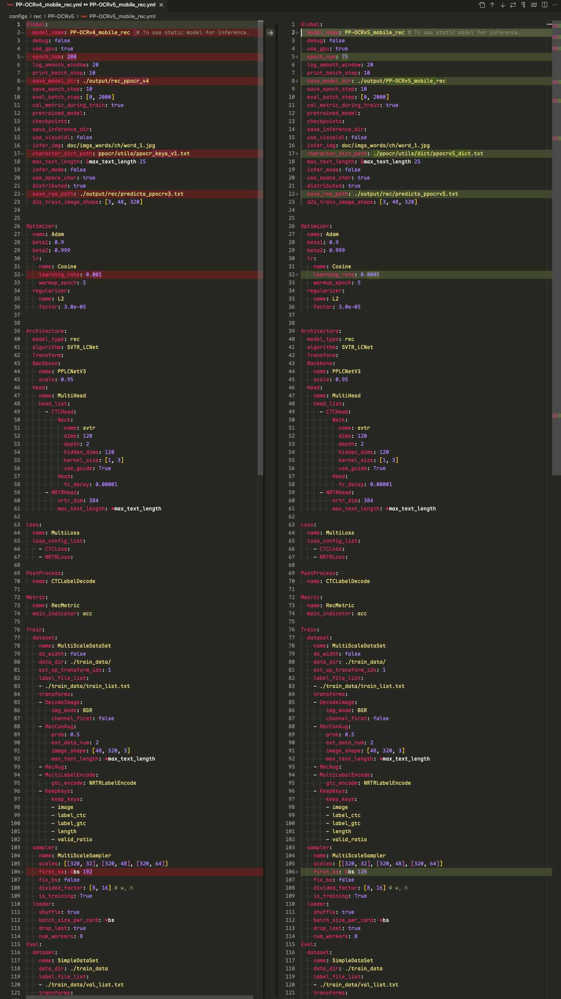
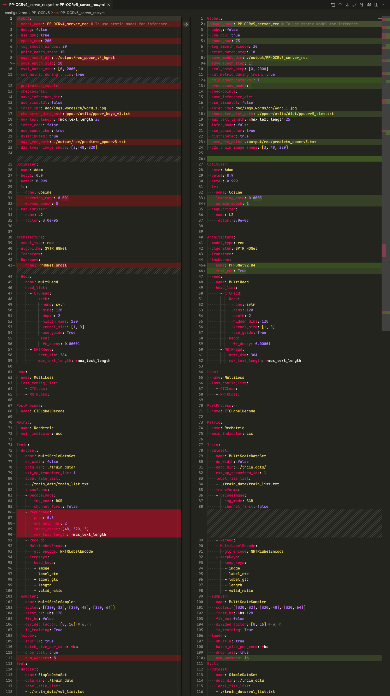

RapidOCR集成PP-OCRv5_rec模型(mobile/server)记录
该文章主要记录RapidOCR集成PP-OCRv5_mobile_rec和PP-OCRv5_server_rec模型记录的，涉及模型转换，模型精度测试等步骤。
引言
来自PaddleOCR官方文档：
PP-OCRv5 是PP-OCR新一代文字识别解决方案，该方案聚焦于多场景、多文字类型的文字识别。在文字类型方面，PP-OCRv5支持简体中文、中文拼音、繁体中文、英文、日文5大主流文字类型，在场景方面，PP-OCRv5升级了中英复杂手写体、竖排文本、生僻字等多种挑战性场景的识别能力。在内部多场景复杂评估集上，PP-OCRv5较PP-OCRv4端到端提升13个百分点。
以下代码运行环境
- OS: macOS Sequoia 15.5
- Python: 3.10.14
- PaddlePaddle: 3.0.0
- paddle2onnx: 2.0.2.rc1
- paddlex: 3.0.0
- rapidocr: 2.1.0
1. 模型跑通
该步骤主要先基于PaddleX可以正确使用PP-OCRv5_mobile_rec模型得到正确结果。
该部分主要参考文档：docs
安装paddlex:
| pip install "paddlex[ocr]==3.0.0"
|
测试PP-OCRv5_mobile_rec模型能否正常识别：
Tip
运行以下代码时，模型会自动下载到 /Users/用户名/.paddlex/official_models 下。
测试图：link
| from paddlex import create_model
# PP-OCRv5_server_rec 同理
model = create_model(model_name="PP-OCRv5_mobile_rec")
img_path = "images/general_ocr_rec_001.png"
output = model.predict(input=img_path, batch_size=1)
for res in output:
res.print()
res.save_to_img(save_path="./output/")
res.save_to_json(save_path="./output/res.json")
|
预期结果如下，表明成功运行：
2. 模型转换
该部分主要参考文档： docs
3. 模型推理验证
该部分主要是在RapidOCR项目中测试能否直接使用onnx模型。要点主要是确定模型前后处理是否兼容。从PaddleOCR config文件中比较PP-OCRv4和PP-OCRv5 mobile det文件差异：

从上图中可以看出，配置基本一模一样，因此现有rapidocr前后推理代码可以直接使用。
| from rapidocr import RapidOCR
model_path = "models/PP-OCRv5_mobile_rec/inference.onnx"
dict_path = "models/PP-OCRv5_mobile_rec/ppocrv5_dict.txt"
engine = RapidOCR(params={"Rec.model_path": model_path, "Rec.rec_keys_path": dict_path})
img_url = "https://img1.baidu.com/it/u=3619974146,1266987475&fm=253&fmt=auto&app=138&f=JPEG?w=500&h=516"
result = engine(img_url)
print(result)
result.vis("vis_result.jpg")
|
该部分主要是在RapidOCR项目中测试能否直接使用onnx模型。要点主要是确定模型前后处理是否兼容。从PaddleOCR config文件中比较PP-OCRv4_server_rec和PP-OCRv5_server_rec文件差异：

从上图中可以看出，配置基本一模一样，backbone换了，但是前后处理配置是一样的。因此现有rapidocr前后推理代码可以直接使用。
| from rapidocr import RapidOCR
model_path = "models/PP-OCRv5_server_rec/inference.onnx"
engine = RapidOCR(params={"Rec.model_path": model_path})
img_url = "https://img1.baidu.com/it/u=3619974146,1266987475&fm=253&fmt=auto&app=138&f=JPEG?w=500&h=516"
result = engine(img_url)
print(result)
result.vis("vis_result.jpg")
|
4. 模型精度测试
Warning
测试集text_det_test_dataset包括卡证类、文档类和自然场景三大类。其中卡证类有82张，文档类有75张，自然场景类有55张。缺少手写体、繁体、日文、古籍文本、拼音、艺术字等数据。因此，该基于该测评集的结果仅供参考。
欢迎有兴趣的小伙伴，可以和我们一起共建更加全面的测评集。
该部分主要使用TextRecMetric和测试集text_rec_test_dataset来评测。
需要注意的是，PP-OCRv5_rec系列模型更加侧重一个模型解决简体中文、中文拼音、繁体中文、英文、日文5大主流文字类型，在场景方面，PP-OCRv5升级了中英复杂手写体、竖排文本、生僻字等多种挑战性场景。 当前测试集并未着重收集以上场景。因此以下指标会有些偏低。如需自己使用，请在自己场景下测试效果。
相关测试步骤请参见TextRecMetric的README，一步一步来就行。
⚠️注意：下面代码用的是即将发布rapidocr==3.0.0版本代码，想要复现的小伙伴，可以稍微等等。
其中，下面代码仅写了mobile模型测试，如果想测server模型，将 mobile 字段换为 server 即可。计算 pred.txt 代码如下：
| import time
import cv2
import numpy as np
from datasets import load_dataset
from tqdm import tqdm
from paddlex import create_model
engine = create_model(model_name="PP-OCRv5_mobile_rec")
dataset = load_dataset("SWHL/text_rec_test_dataset")
test_data = dataset["test"]
content = []
for i, one_data in enumerate(tqdm(test_data)):
img = np.array(one_data.get("image"))
img = cv2.cvtColor(img, cv2.COLOR_RGB2BGR)
t0 = time.perf_counter()
result = next(engine.predict(input=img, batch_size=1))
elapse = time.perf_counter() - t0
rec_text = result["rec_text"]
if len(rec_text) <= 0:
rec_text = ""
elapse = 0
gt = one_data.get("label", None)
content.append(f"{rec_text}\t{gt}\t{elapse}")
with open("pred.txt", "w", encoding="utf-8") as f:
for v in content:
f.write(f"{v}\n")
|
| import time
import cv2
import numpy as np
from datasets import load_dataset
from tqdm import tqdm
from rapidocr import EngineType, OCRVersion, RapidOCR
model_path = "models/official_models/PP-OCRv5_mobile_rec"
dict_path = "models/PP-OCRv5_mobile_rec/ppocrv5_dict.txt"
engine = RapidOCR(
params={
"Rec.model_dir": model_path,
"Rec.rec_keys_path": dict_path,
"Rec.engine_type": EngineType.PADDLE,
"Rec.ocr_version": OCRVersion.PPOCRV5,
}
)
dataset = load_dataset("SWHL/text_rec_test_dataset")
test_data = dataset["test"]
content = []
for i, one_data in enumerate(tqdm(test_data)):
img = np.array(one_data.get("image"))
img = cv2.cvtColor(img, cv2.COLOR_RGB2BGR)
t0 = time.perf_counter()
result = engine(img, use_rec=True, use_cls=False, use_det=False)
elapse = time.perf_counter() - t0
rec_text = result.txts[0]
if len(rec_text) <= 0:
rec_text = ""
elapse = 0
gt = one_data.get("label", None)
content.append(f"{rec_text}\t{gt}\t{elapse}")
with open("pred.txt", "w", encoding="utf-8") as f:
for v in content:
f.write(f"{v}\n")
|
| import time
import cv2
import numpy as np
from datasets import load_dataset
from tqdm import tqdm
from rapidocr import EngineType, OCRVersion, RapidOCR
model_path = "models/PP-OCRv5_mobile_rec/inference.onnx"
dict_path = "models/PP-OCRv5_mobile_rec/ppocrv5_dict.txt"
engine = RapidOCR(
params={
"Rec.model_path": model_path,
"Rec.rec_keys_path": dict_path,
}
)
dataset = load_dataset("SWHL/text_rec_test_dataset")
test_data = dataset["test"]
content = []
for i, one_data in enumerate(tqdm(test_data)):
img = np.array(one_data.get("image"))
img = cv2.cvtColor(img, cv2.COLOR_RGB2BGR)
t0 = time.perf_counter()
result = engine(img, use_rec=True, use_cls=False, use_det=False)
elapse = time.perf_counter() - t0
rec_text = result.txts[0]
if len(rec_text) <= 0:
rec_text = ""
elapse = 0
gt = one_data.get("label", None)
content.append(f"{rec_text}\t{gt}\t{elapse}")
with open("pred.txt", "w", encoding="utf-8") as f:
for v in content:
f.write(f"{v}\n")
|
计算指标代码：
| from text_rec_metric import TextRecMetric
metric = TextRecMetric()
pred_path = "pred.txt"
metric = metric(pred_path)
print(metric)
|
指标汇总如下（以下指标均为CPU下计算所得）：
| Exp |
模型 |
推理框架 |
模型格式 |
ExactMatch↑ |
CharMatch↑ |
Elapse↓ |
| 1 |
PP-OCRv5_mobile_rec |
PaddleX |
PaddlePaddle |
0.7323 |
0.9161 |
0.0778 |
| 2 |
PP-OCRv5_mobile_rec |
RapidOCR |
PaddlePaddle |
0.7355 |
0.9177 |
0.0772 |
| 3 |
PP-OCRv5_mobile_rec |
RapidOCR |
ONNXRuntime |
0.7355 |
0.9177 |
0.0174 |
| 10 |
PP-OCRv5_mobile_rec |
RapidOCR |
PyTorch |
0.7355 |
0.9177 |
0.094 |
| 4 |
PP-OCRv4_mobile_rec |
RapidOCR |
ONNXRuntime |
0.8323 |
0.9355 |
- |
|
|
|
|
|
|
|
| 5 |
PP-OCRv5_server_rec |
PaddleX |
PaddlePaddle |
0.8097 |
0.9424 |
0.0777 |
| 6 |
PP-OCRv5_server_rec |
RapidOCR |
PaddlePaddle |
0.8129 |
0.9431 |
0.0775 |
| 7 |
PP-OCRv5_server_rec |
RapidOCR |
ONNXRuntime |
0.8129 |
0.9431 |
0.0655 |
| 11 |
PP-OCRv5_server_rec |
RapidOCR |
PyTorch |
0.8129 |
0.9431 |
0.0725 |
| 8 |
PP-OCRv4_server_rec |
RapidOCR |
ONNXRuntime |
0.7968 |
0.9381 |
- |
| 9 |
PP-OCRv4_doc_server_rec |
RapidOCR |
ONNXRuntime |
0.8098 |
0.9444 |
- |
从以上结果来看，可以得到以下结论：
- Exp1和Exp2相比，指标差异不大，说明文本识别 前后处理代码可以共用 。
- Exp2和Exp3相比，mobile模型转换为ONNX格式后，指标几乎一致，说明 模型转换前后，误差较小，推理速度也有提升 。
- Exp3和Exp4相比，mobile整体指标弱于PP-OCRv4的。因为测评集集中在中英文的印刷体，手写体少些，因此仅供参考。
- Exp6和Exp7相比，指标差异不大，说明更换backbone后的文本识别模型转换为ONNX格式，精度没有影响。Paddle2ONNX工具太强了！
- Exp7和Exp8相比，PP-OCRv5 server模型有很大提升。当然，不排除训练用到了测评集数据。
- Exp10和Exp11两个实验均说明PyTorch格式模型精度与原本模型，误差较小，可以放心使用。
Tip
- 如果是单一中英文场景，建议用PP-OCRv4系列
- 如果是中英日、印刷和手写体混合场景，建议用PP-OCRv5系列
上述表格中基于ONNXRuntime的结果已经更新到开源OCR模型对比中。
5. 集成到rapidocr中
该部分主要包括将字典文件写入ONNX模型、托管模型到魔搭和更改rapidocr代码适配等。
字典文件写入ONNX模型
该步骤仅存在文本识别模型中，文本检测模型没有这个步骤。
详细代码
| from pathlib import Path
from typing import List, Union
import onnx
import onnxruntime as ort
from onnx import ModelProto
def read_txt(txt_path: Union[Path, str]) -> List[str]:
with open(txt_path, "r", encoding="utf-8") as f:
data = [v.rstrip("\n") for v in f]
return data
class ONNXMetaOp:
@classmethod
def add_meta(
cls,
model_path: Union[str, Path],
key: str,
value: List[str],
delimiter: str = "\n",
) -> ModelProto:
model = onnx.load_model(model_path)
meta = model.metadata_props.add()
meta.key = key
meta.value = delimiter.join(value)
return model
@classmethod
def get_meta(
cls, model_path: Union[str, Path], key: str, split_sym: str = "\n"
) -> List[str]:
sess = ort.InferenceSession(model_path)
meta_map = sess.get_modelmeta().custom_metadata_map
key_content = meta_map.get(key)
key_list = key_content.split(split_sym)
return key_list
@classmethod
def del_meta(cls, model_path: Union[str, Path]) -> ModelProto:
model = onnx.load_model(model_path)
del model.metadata_props[:]
return model
@classmethod
def save_model(cls, save_path: Union[str, Path], model: ModelProto):
onnx.save_model(model, save_path)
dicts = read_txt("models/PP-OCRv5_mobile_rec/ppocrv5_dict.txt")
model_path = "models/PP-OCRv5_server_rec/inference.onnx"
model = ONNXMetaOp.add_meta(model_path, key="character", value=dicts)
new_model_path = Path(model_path).parent / "ch_PP-OCRv5_rec_server_infer.onnx"
ONNXMetaOp.save_model(new_model_path, model)
t = ONNXMetaOp.get_meta(new_model_path, key="character")
print(t)
print(len(t))
|
托管模型到魔搭
该部分主要是涉及模型上传到对应位置，并合理命名。注意上传完成后，需要打Tag，避免后续rapidocr whl包中找不到模型下载路径。
我这里已经上传到了魔搭上，详细链接参见：link
更改rapidocr代码适配
该部分主要涉及到更改default_models.yaml和paddle.py的代码来适配。
同时，需要添加对应的单元测试，在保证之前单测成功的同时，新的针对性该模型的单测也能通过。
我这里已经做完了，小伙伴们感兴趣可以去看看源码。
写在最后
至此，该部分集成工作就基本完成了。这部分代码会集成到rapidocr==3.0.0中。
版本号之所以从v2.1.0到v3.0.0，原因是：语义化版本号。我在集成过程中，发现v2.1.0中字段不太合理，做了一些改进，动了外部API，因此只能升大版本号。请大家在使用过程中，注意查看最新文档→ docs 。
{kind=link}